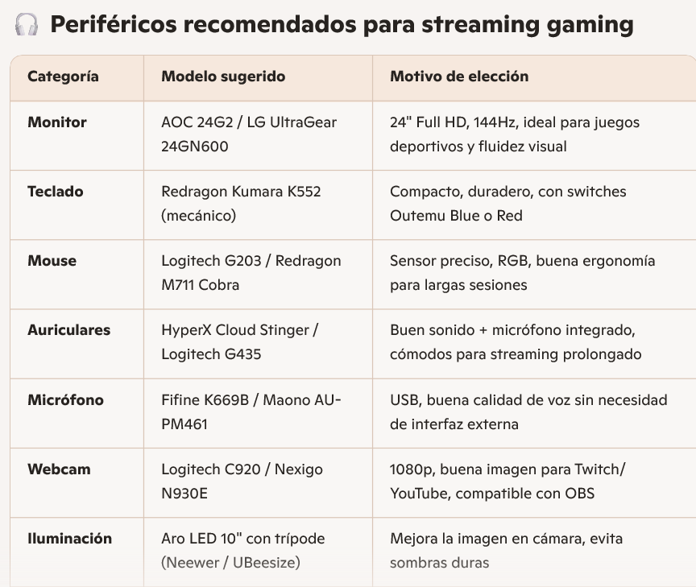
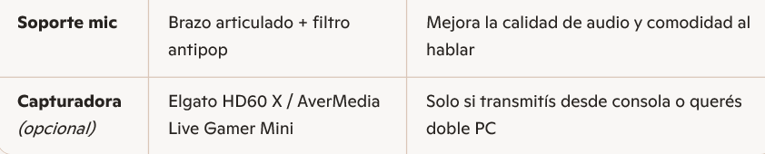
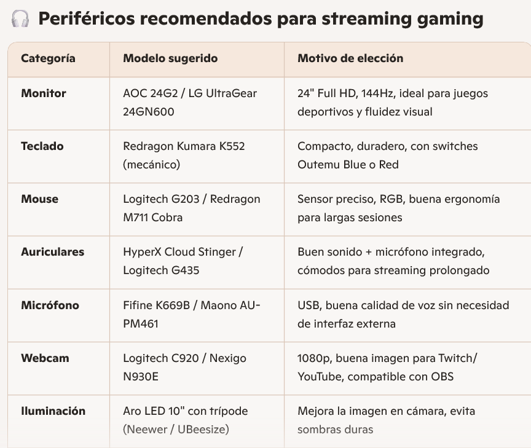
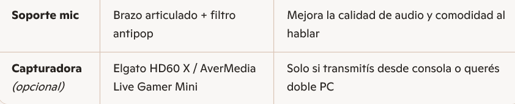

En primer lugar elegi que la IA copilot me recomendara que elementos utilizar:

 



Tambien le pedi a la IA chat gpt que me recomiende componentes:


Luego de ver las recomendaciones esta es la pc que decidi armar:

Los presupuestos los saque de las siguientes paguinas https://insumaxcenter.com.ar/gamer es una paguina de la ciudad de parana, https://fullh4rd.com.ar/ es una tienda de argentina y https://bluetech.com.ar/productos/windows11/.
CPU:

TARJETA GRAFICA:

ALMACENAMIENTO:

PLACA BASE:

FUENTE DE PODER:

GABINETE:

REFRIGERACION:

WEBCAM:

MONITOR:
.png)
TECLADO Y MOUSE:

AURICULARES:
JOYSTIC PS4:

El presupuesto total de todo es de $1.510.183 pesos, que en el dia de hoy equivalen a 1000,21 dolares
¿Porque elegi estos componentes?
En el procesador elegi utilizar un ryzen 5600, ya que este tiene un buen rendimiento en los videojuegos y tiene la capacidad para realizar las tareas en simultaneo de manera rápida y equilibrada (discord, OBS) sin saturarse, existen mejores como el ryzen 7 pero este se desempeña muy bien en su trabajo. Para el procesador grafico elegi el RTX 3050 con 8 GB de VRAM esto me va a permitir stremear y jugar a 1080p, tiene acceso a tecnologías como DLSS que permiten sumar calidad visual sin perdidas de FPS. La RAM de 16GB DDR4 es buena para el uso del gaiming y del streaming, permite mantener el sistema ágil aun asi teniendo varias aplicaciones abiertas (discors, obs, etc) Para el almacenamiento elegi ponerle el SSD NVMe Gen4 de SanDisk, contiene una buena velocidad con 500MB/s de lectura, ayuda muchísimo en la reducción de los tiempos de carga, esto se nota en los juegos en el sistema operativo. La placa base es la B550 además de ser compatible con todos los elementos que elegi, me permitiría poder cambiar el procesador por uno mejor a futuro o agregar mas espacio. La fuente 650W me garantiza una buena eficiencia energética y protección contra picos de tensión, es unos de los puntos mas débiles, capaz mas a futuro se podría cambiar por uno mejor. Para el gabinete me decidí por el Eagle Warrior con 4 ventiladores ARGB logra una mejoría en el flujo de aire, va en sintonía con el watercooler que elegi de 360mm, esto va a poder permitir mantener la CPU en temperaturas optimas, la refrigeración liquida ayuda a la reducción del ruido. El monitor ViewSonic VX2428A con 180Hz da una buena respuesta en juegos de deporte, esto ayuda a mejorar la experiencia del juego. La webcam Logitech C920 es una cámara muy utilizada por los stremers. Brinda una buena calidad de imagen, tiene enfoque automatico, ayuda mucho a mantener una imagen clara y profesional. El teclado y mouse Thermaltake eSPORTS y los auriculares Aureox GH200 cumplen sus función, son cómodos y te permiten jugar y gracias al microfono de los Aureox permiten comunicarte sin problemas. El joystick garantiza una mejor experiencia para el juego FC26, donde el control es más cómodo y fácil de jugar que el teclado.